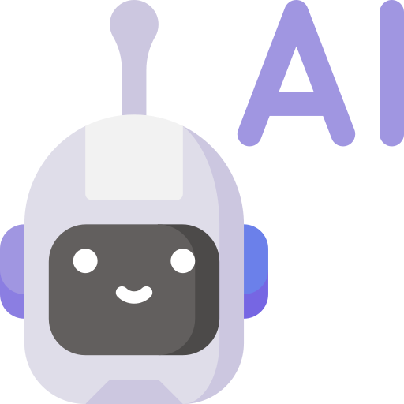

SERVICES I OFFER
Customer Support
- Email, Instagram & WhatsApp Business communication
- Phone support
- Customer follow-ups and issue resolution
Administrative Support
- Email and calendar management
- Data entry and documentation
- Financial tracking with Excel/Google Sheets
Operations Support
- Inventory management and order processing
- Supplier coordination
- Workflow optimization using AI tools
Content & Visual Support
- Canva designs (social media posts, presentations, flyers)
Tools I Use

AI Tools: ChatGPT, Claude, Gemini
.png)
Productivity: Google Workspace (Docs, Sheets, Calendar), Microsoft Office (Word, Excel, Outlook), Trello
Communication: WhatsApp Business, Instagram, Email platforms (Gmail, Outlook)
Design Canva
Work Samples
Customer Support Example
Administrative / Financial Tracking
Inventory Management
Canva Visuals
How I Work
I focus on organization, clear communication, and efficient workflows. Using AI tools, spreadsheets, and digital platforms, I provide reliable support so businesses can operate smoothly while I manage the operational details.
Who I Work With
I work with small to medium-sized businesses, e-commerce stores, and entrepreneurs who need remote support to manage customer interactions, administrative tasks, and operational workflows. I provide reliable support so businesses can operate smoothly while i manage the operational details.
Why Work with Me
- 3+ years of remote work experience
- Strong customer communication skills
- Highly organized and detail-oriented
- Proficient in using AI tools for productivity
- Dedicated to helping businesses save time and operate efficiently
- Reliable and proactive support
Let's Work Together
If you're looking for a reliable Virtual Assistant to support yout business operations, customer service, and administrative tasks, let's connect! I am passionate about helping businesses stay organized, efficient, and connected with their customers and teams. Contact me to discuss how I can support your business needs.
Contact:
Email: anasofhi99@gmail.com
WhatsApp: +58 414 797 1622
LinkedIn: